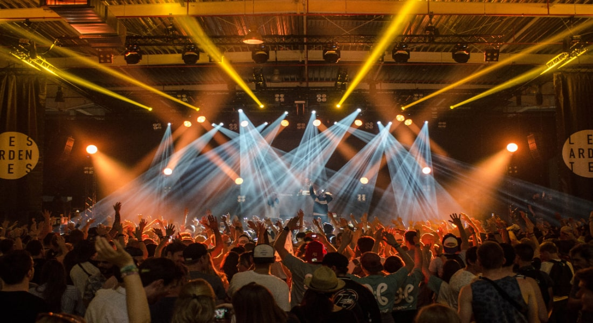
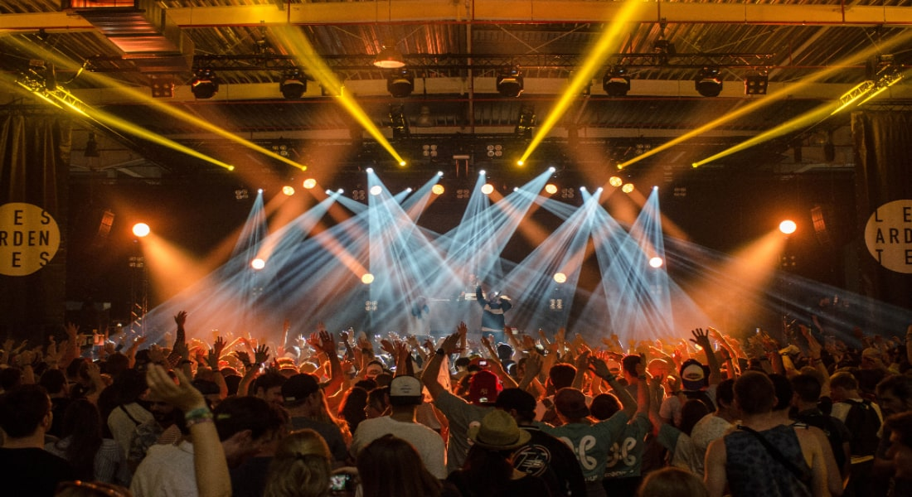

Festival Lollapalooza
Es un festival musical de los Estados Unidos que originalmente
ofrecía bandas de rock alternativo, indie y punk rock; también hay
actuaciones cómicas y de danza. Concebido en 1991 por Perry
Farrell, cantante de Jane's Addiction, Lollapalooza se realizó
anualmente hasta 1997 y fue revivido en 2003. El festival
encapsula la cultura joven de los años 1990.
Farrell vendió la marca Lollapalooza al Capital Sports &
Entertainment, el cual ha manejado el Austin City Limits Music
Festival. Esta empresa resucitó a Lollapalooza como un festival de
dos días en el año 2005, en el Grant Park de Chicago. El festival
fue generalmente un éxito pero no es comparable al éxito del
festival viajero, atrayendo alrededor de 30 000 personas.
La primera aparición oficial de Lollapalooza fuera de Estados
Unidos fue en 2011 en Santiago, Chile, siendo el primer país en
Latinoamérica en recibir dicho evento mundial, sumándose una
versión brasileña desde 2012. Existe una versión argentina anual
en Buenos Aires desde 2014. Se anunció que el primer Festival
Lollapalooza se llevaría a cabo en Europa en septiembre de 2015 en
Berlín, en el histórico Aeropuerto de Tempelhof.
 
